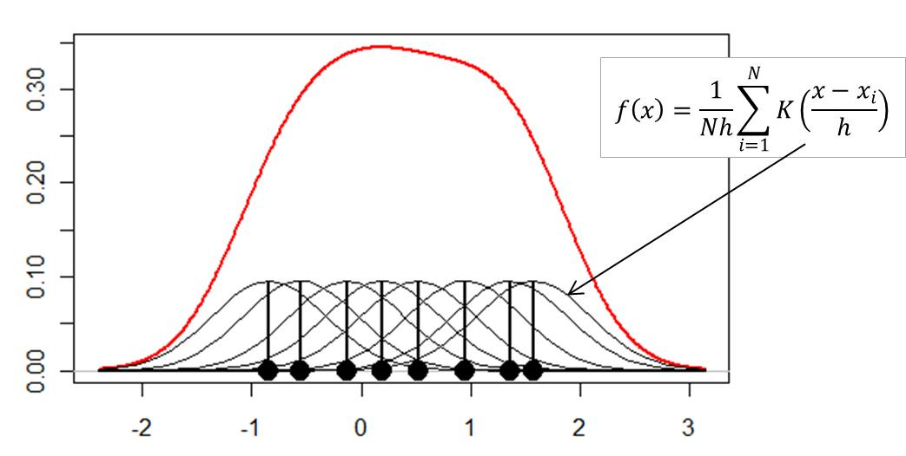

Análisis de la distribución de una muestra de datos¶
34:29 min | Ultima modificación: Marzo 21, 2021 | YouTube
[1]:
import warnings
warnings.filterwarnings("ignore")
[2]:
import numpy as np
Sea una muestra de datos obtenida de una distribución normal estándar
[3]:
rng = np.random.default_rng(12345)
x = rng.normal(size=100)
Modulo statistics de Python¶
[4]:
import statistics as stats
# Media
stats.mean(x)
[4]:
-0.028207783172759245
[5]:
# Mediana
stats.median(x)
[5]:
-0.029951996837220107
[6]:
# desviacion estandar (p es la poblacional)
stats.stdev(x), stats.pstdev(x)
[6]:
(0.945126072825009, 0.9403885689428003)
[7]:
# varianza
stats.variance(x), stats.pvariance(x)
[7]:
(0.8932632935336242, 0.8843306605982879)
Histograma¶
[8]:
import matplotlib.pyplot as plt
# histograma
plt.hist(
x=x,
bins='auto',
color='tab:orange',
alpha=0.6,
rwidth=0.80,
)
plt.show()
<Figure size 640x480 with 1 Axes>
Aproximación empírica de la función de densidad de probabilidad¶
A cada punto de la muestra de datos se le asigna una función unitaria de densidad de probabilidad.

Con:
\(N\): Número de puntos
\(K\): Kernel
\(h\): Ancho del kernel
Esto se conoce como una estimación no paramétrica de una función de densidad, y se utiliza para con el fin de estimar una función de densidad que no siga una distribución conocida, como la normal, exponencial, log-normal, entre otras. Normalmente se utiliza \(h=1\).
[9]:
#
# Graficación del KDE con pandas
#
import pandas as pd
fig, ax = plt.subplots()
df = pd.DataFrame({'x': x})
df.plot.kde(legend=False, ax=ax)
df.hist(density=True, ax=ax);
[10]:
#
# Graficación del KDE con seaborn
#
import seaborn as sns
sns.histplot(np.array(x), kde=True)
[10]:
<matplotlib.axes._subplots.AxesSubplot at 0x7f32aa7c6780>
[11]:
from statsmodels.distributions.empirical_distribution import ECDF
# Distribución acumulada empírica
ecdf = ECDF(x)
plt.plot(ecdf.x, ecdf.y)
plt.show()
Ejercicio.– Una distribución Chi-cuadrada de \(n\) grados de libertad se define como la variable aleatoria:
donde \(z_i\) son números aleatorios provenientes de una distribución normal estándar. Realice las siguientes actividades:
Genere 400 números aleatorios \(x_i\) con \(n = 5\) a partir de la definición anterior.
En la misma figura grafique: (a) el histograma; (b) la distribución empírica; (c) la función de densidad de probabilidad para la distribución teórica chi-cuadrado con 5 grados de libertad.
Pruebas de normalidad¶
Un problema típico de series de tiempo consiste en determinar si una muestra de datos proviene de una distribución normal. Para ello, se consideran las siguientes hipótesis:
\(H_0:\) Las observaciones \({x_1,…,x_T}\) provienen de una distribución normal con media y varianza desconocidas
\(H_a:\) Las observaciones provienen de una distribución arbitraria
Metodologías típicas: * Gráfico Cuartil – Cuartil (Q-Q plot) * Gráfico de probabilidad normal * Prueba de Jarque-Bera
Gráfica Cuartil-Cuartil (Q-Q plot)¶
Método gráfico para comparar dos distribuciones. Si los datos provienen de la misma distribución, forman una línea recta.
[12]:
import statsmodels.api as sm
x = rng.normal(size=1500)
sm.qqplot(x, line ='45');
Prueba de normalidad de Jarque-Bera
Se basa en determinar si los datos tienen la misma asimetría \((M_3)\) y curtosis \((M_4)\) de una distribución normal.
\(H_0:\) Los datos provienen de una distribución normal
\(H_a:\) Los datos no provienen de una distribución normal
Esta prueba puede ser engañosa para muestras pequeñas. El rechazo de \(H_0\) puede indicar: * La presencia de observaciones atípicas * Que la varianza no es constante * La presencia de comportamiento no lineal (dependencia temporal)
[13]:
from scipy.stats import jarque_bera
result = jarque_bera(x)
result.statistic, result.pvalue
[13]:
(1.1447703557040292, 0.564178167328045)
[14]:
from scipy.stats import shapiro
result = shapiro(x)
result.statistic, result.pvalue
[14]:
(0.998629093170166, 0.2864187955856323)
[15]:
from scipy.stats import anderson
result = anderson(x)
result
[15]:
AndersonResult(statistic=0.3662562566566976, critical_values=array([0.574, 0.654, 0.785, 0.916, 1.089]), significance_level=array([15. , 10. , 5. , 2.5, 1. ]))
Ejercicio.– Genere una muestra aleatoria de 1000 datos de la variable \(z\), la cual está definida como \(z = x + y\) donde \(x\) sigue una distribución normal estándar, y \(y\) sigue una distribución normal con media = 1 y varianza igual a 0.5. Grafique las distribuciones teórica y empírica de \(z\).